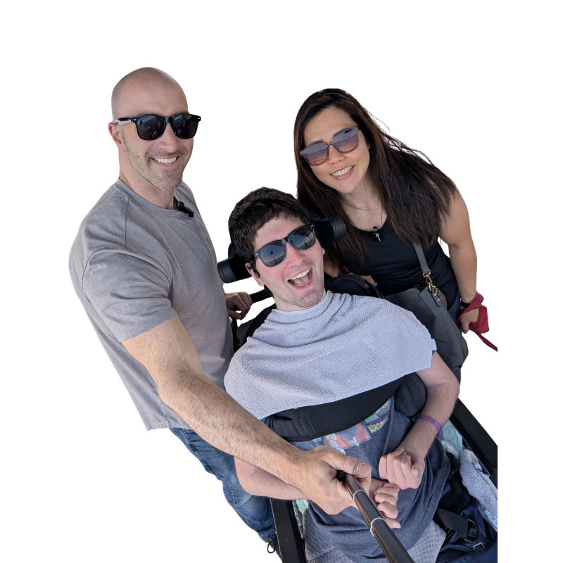

We're Ari, Nancy, and Ben. Ben is Ari's little brother who has a condition called H-ABC — a rare, progressive neurological disorder. We are full-time, live-in caregivers for Ben, and Ben is the reason everything here exists.

Ben's condition is progressive. Over time, it took away his voice and his mobility. He spent nearly a decade with no meaningful access to technology — no games, no independent play, nothing designed for how he communicates or moves. In 2022, Ben moved in with Ari and Nancy, and that's when everything changed.
We started building Benny's Hub — a free, browser-based arcade designed specifically for Ben. Every game works with one or two switch inputs: the spacebar, the enter key, a mouse click, a screen touch, or any external adaptive switch. We built it around what Ben actually needed, what he responded to, what made him light up. It changed things for him — games built just for him, where he could play independently, on his own terms.
The moment we saw what it did for Ben, we couldn't stop asking: why aren't there more games like this? Why doesn't a platform like this already exist?
Ben isn't just the inspiration — he's a collaborator. He helps with game ideas, mechanics, and is our primary tester for everything we ship. He plays these games every single day. We watch what he gravitates toward, what keeps his attention, what makes him laugh, and what he comes back to. That feedback loop is built directly into how we build.
Many of our games are collaborative and multiplayer, designed with multiple input methods — so families, classmates, and caregivers can play alongside switch users at the same time.